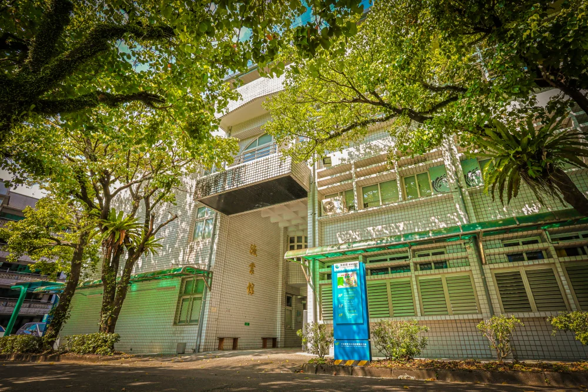

NEWS & UPDATES
漁業科消息
最新公告請至漁業科原網站查詢。
競賽成果114 年海事水產類技藝競賽：漁業科九連霸學習活動114 年度大手牽小手計畫：出海海釣體驗競賽成果2025 全國船模創客大賽：直線競速四連霸以上為原網站既有內容摘錄，非即時公告。
EXPLORE FISHERIES
探索漁業科
認識專業課程、教學環境與學習成果。

NEWS & UPDATES
最新公告請至漁業科原網站查詢。
競賽成果114 年海事水產類技藝競賽：漁業科九連霸學習活動114 年度大手牽小手計畫：出海海釣體驗競賽成果2025 全國船模創客大賽：直線競速四連霸以上為原網站既有內容摘錄，非即時公告。
EXPLORE FISHERIES
認識專業課程、教學環境與學習成果。